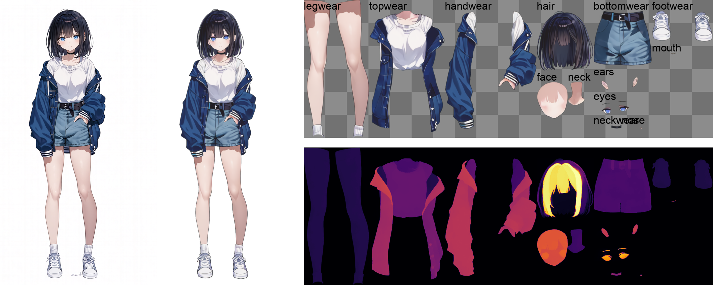
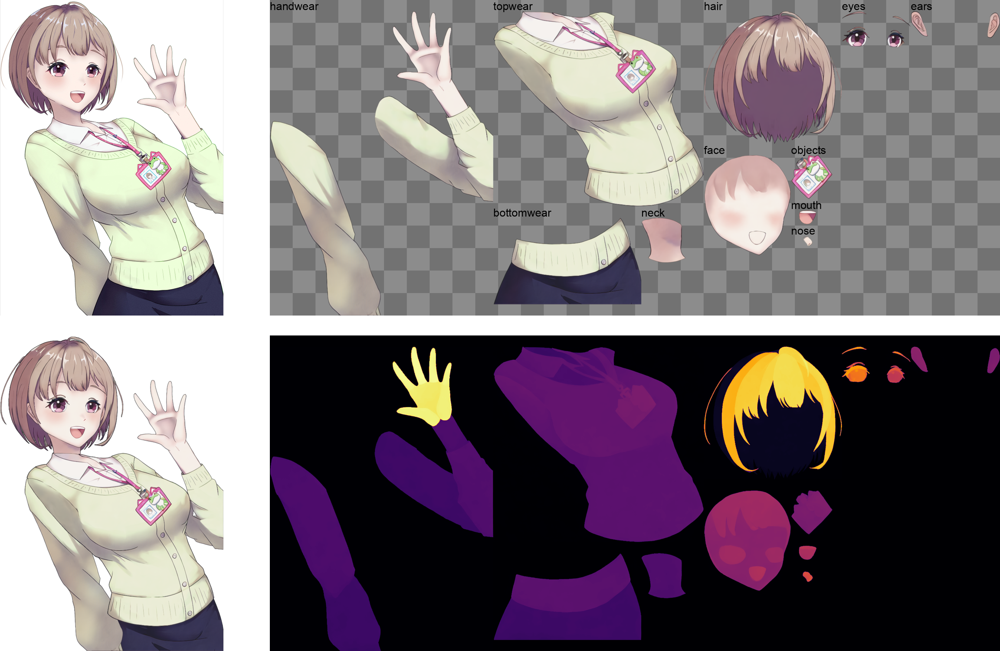
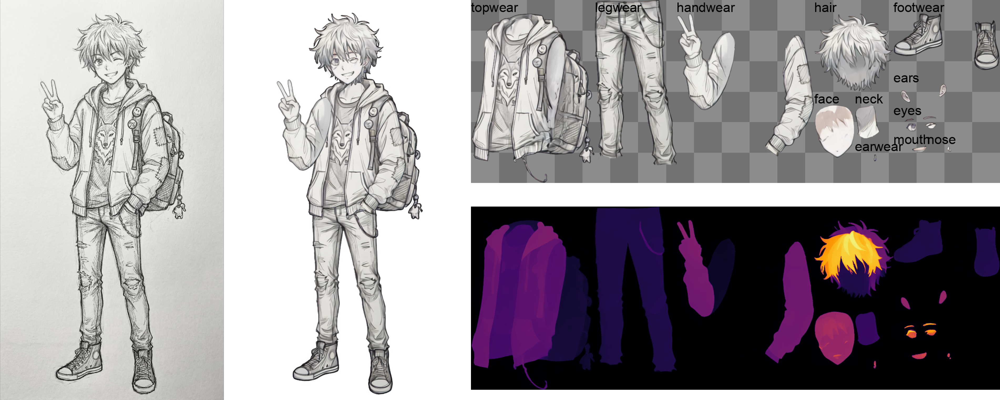

See-through: アニメキャラクターの単一画像におけるレイヤー自動分解
See-through: Single-image Layer Decomposition for Anime Characters
概要 / Abstract
本研究では、一枚の静止画イラストから、キャラクターの各パーツ（髪、顔、衣装など）を自動でレイヤー分離する新技術「See-through」を提案します。本技術は、Live2D制作における最大のボトルネックである「パーツ分け」および「隠れた部分の描き足し」工程を自動化するものです。キャラクターの構造や前後関係を正確に推論することで、入り組んだ髪の毛のような複雑な重なりも高精度にレイヤー化し、プロフェッショナルの現場におけるリアルタイムアニメーション用途にも耐えうる、高品質な操作可能モデルの構築を目指します。
We introduce a framework that automates the transformation of static anime illustrations into manipulatable 2.5D models. Current professional workflows require tedious manual segmentation and the artistic "hallucination" of occluded regions to enable motion. Our approach overcomes this by decomposing a single image into fully inpainted, semantically distinct layers with inferred drawing orders. To address the scarcity of training data, we introduce a scalable engine that bootstraps high-quality supervision from commercial Live2D models, capturing pixel-perfect semantics and hidden geometry. Our methodology couples a diffusion-based Body Part Consistency Module, which enforces global geometric coherence, with a pixel-level pseudo-depth inference mechanism. This combination resolves the intricate stratification of anime characters, e.g., interleaving hair strands, allowing for dynamic layer reconstruction. We demonstrate that our approach yields high-fidelity, manipulatable models suitable for professional, real-time animation applications.
レイヤー分解結果 / Layer Decomposition Results
各図には、元の入力画像、レイヤー分解後の再構成イメージ、および分解された各レイヤーを表示しています。
Each figure shows the original input image, the reconstructed image after layer decomposition, and the decomposed individual layers.







Live2Dデモ動画 / Live2D Demo Video
本手法で生成したレイヤーを用いて、アーティストがLive2Dモデルにモーションを付けた結果です。
Live2D models animated by artists using layers generated by our method.
より複雑なシーンにも対応可能です。リライティングなどの高度な編集にも応用できます。
Our method also handles more complex scenes, enabling advanced editing such as relighting.
さらに、漫画の動的アニメーション化にも応用可能です。
Furthermore, our approach can be applied to animate manga panels.

© 赤松健『ラブひな』第1巻 / Manga109 dataset